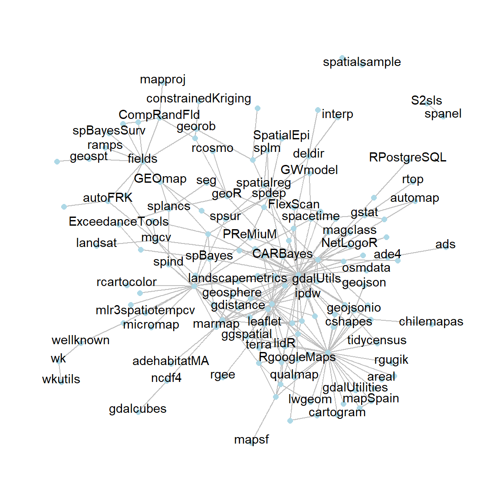

```{r, eval=TRUE}
library(tidyverse)
library(tidygraph)
library(ggraph)
library(ctv)
library(tools)
library(cranlogs)
require(highcharter)
```Spatial Data is Maturing in R
Analysis
Spatial
Visualization
R is particularly powerful for spatial statistical analysis and quantitative researchers in particular may find R more useful than GIS desktop applications
R is particularly powerful for spatial statistical analysis and quantitative researchers in particular may find R more useful than GIS desktop applications. As data becomes more geographical, there is a growing necessity to make spatial data more accessible and easy to process. While there are plenty of tools out there that can make your life much easier when processing spatial data (e.g. QGIS and ArcMap) using R to conduct spatial analysis can be just as easy. This is especially true if you’re new to some of these packages and don’t feel like reading through all of the documentation to learn the package or, even more tedious, writing hundreds of lines of your own code to do something relatively simple. In this article I discuss a few packages that make common spatial statistics methods easy to perform in R (Bivand 2006).
We will conduct a high-level assessment of the R packages that are dedicated for spatial analysis. By showing network connection across package dependencies — which packages utilize code from another package to execute a task – we will undertake a high-level assessment of the condition of spatial in R. For comparison, we’ll compare our Analysis of Spatial Data task view to the tidyverse, one of R’s most well-known collections of packages, as well as the venerable Environmetrics task view, which includes numerous environmental analysis tools. To accomplish so, we’ll need to write some R code and install the following packages:
We will use the handy CRAN_package_db function from the tools package which conveniently grabs information from the DESCRIPTION file of every package on CRAN and turns it into a dataframe.
all_cran_packages <- CRAN_package_db()all_cran_packages %>%
glimpse()Rows: 19,050
Columns: 66
$ Package <chr> "A3", "aaSEA", "AATtools", "ABACUS", "abbrev~
$ Version <chr> "1.0.0", "1.1.0", "0.0.1", "1.0.0", "0.1", "~
$ Priority <chr> NA, NA, NA, NA, NA, NA, NA, NA, NA, NA, NA, ~
$ Depends <chr> "R (>= 2.15.0), xtable, pbapply", "R(>= 3.4.~
$ Imports <chr> NA, "DT(>= 0.4), networkD3(>= 0.4), shiny(>=~
$ LinkingTo <chr> NA, NA, NA, NA, NA, NA, NA, NA, NA, "Rcpp, B~
$ Suggests <chr> "randomForest, e1071", "knitr, rmarkdown", N~
$ Enhances <chr> NA, NA, NA, NA, NA, NA, NA, NA, NA, NA, NA, ~
$ License <chr> "GPL (>= 2)", "GPL-3", "GPL-3", "GPL-3", "GP~
$ License_is_FOSS <chr> NA, NA, NA, NA, NA, NA, NA, NA, NA, NA, NA, ~
$ License_restricts_use <chr> NA, NA, NA, NA, NA, NA, NA, NA, NA, NA, NA, ~
$ OS_type <chr> NA, NA, NA, NA, NA, NA, NA, NA, NA, NA, NA, ~
$ Archs <chr> NA, NA, NA, NA, NA, NA, NA, NA, NA, NA, NA, ~
$ MD5sum <chr> "027ebdd8affce8f0effaecfcd5f5ade2", "0f9aaef~
$ NeedsCompilation <chr> "no", "no", "no", "no", "no", "no", "no", "n~
$ Additional_repositories <chr> NA, NA, NA, NA, NA, NA, NA, NA, NA, NA, NA, ~
$ Author <chr> "Scott Fortmann-Roe", "Raja Sekhara Reddy D.~
$ `Authors@R` <chr> NA, NA, "person(\"Sercan\", \"Kahveci\", ema~
$ Biarch <chr> NA, NA, NA, NA, NA, NA, NA, NA, NA, NA, NA, ~
$ BugReports <chr> NA, NA, "https://github.com/Spiritspeak/AATt~
$ BuildKeepEmpty <chr> NA, NA, NA, NA, NA, NA, NA, NA, NA, NA, NA, ~
$ BuildManual <chr> NA, NA, NA, NA, NA, NA, NA, NA, NA, NA, NA, ~
$ BuildResaveData <chr> NA, NA, NA, NA, NA, NA, NA, NA, NA, NA, NA, ~
$ BuildVignettes <chr> NA, NA, NA, NA, NA, NA, NA, NA, NA, NA, NA, ~
$ Built <chr> NA, NA, NA, NA, NA, NA, NA, NA, NA, NA, NA, ~
$ ByteCompile <chr> NA, NA, "true", NA, NA, NA, NA, NA, NA, NA, ~
$ `Classification/ACM` <chr> NA, NA, NA, NA, NA, NA, NA, NA, NA, NA, NA, ~
$ `Classification/ACM-2012` <chr> NA, NA, NA, NA, NA, NA, NA, NA, NA, NA, NA, ~
$ `Classification/JEL` <chr> NA, NA, NA, NA, NA, NA, NA, NA, NA, NA, NA, ~
$ `Classification/MSC` <chr> NA, NA, NA, NA, NA, NA, NA, NA, NA, NA, NA, ~
$ `Classification/MSC-2010` <chr> NA, NA, NA, NA, NA, NA, NA, NA, NA, NA, NA, ~
$ Collate <chr> NA, NA, NA, NA, NA, NA, NA, NA, NA, NA, NA, ~
$ Collate.unix <chr> NA, NA, NA, NA, NA, NA, NA, NA, NA, NA, NA, ~
$ Collate.windows <chr> NA, NA, NA, NA, NA, NA, NA, NA, NA, NA, NA, ~
$ Contact <chr> NA, NA, NA, NA, NA, NA, NA, NA, "Ian Morison~
$ Copyright <chr> NA, NA, NA, NA, NA, NA, NA, NA, NA, NA, NA, ~
$ Date <chr> "2015-08-15", NA, NA, NA, "2021-12-12", NA, ~
$ Description <chr> "Supplies tools for tabulating and analyzing~
$ Encoding <chr> NA, "UTF-8", "UTF-8", "UTF-8", "UTF-8", NA, ~
$ KeepSource <chr> NA, NA, NA, NA, NA, NA, NA, NA, NA, NA, NA, ~
$ Language <chr> NA, NA, NA, NA, NA, NA, NA, NA, NA, NA, NA, ~
$ LazyData <chr> NA, "true", "true", "true", NA, "true", NA, ~
$ LazyDataCompression <chr> NA, NA, NA, NA, NA, NA, NA, NA, NA, NA, NA, ~
$ LazyLoad <chr> NA, NA, NA, NA, NA, NA, NA, NA, NA, NA, "yes~
$ MailingList <chr> NA, NA, NA, NA, NA, NA, NA, NA, NA, NA, NA, ~
$ Maintainer <chr> "Scott Fortmann-Roe <scottfr@berkeley.edu>",~
$ Note <chr> NA, NA, NA, NA, NA, NA, NA, NA, NA, NA, NA, ~
$ Packaged <chr> "2015-08-16 14:17:33 UTC; scott", "2019-11-0~
$ RdMacros <chr> NA, NA, NA, NA, NA, NA, NA, NA, NA, NA, NA, ~
$ StagedInstall <chr> NA, NA, NA, NA, NA, NA, NA, NA, NA, NA, NA, ~
$ SysDataCompression <chr> NA, NA, NA, NA, NA, NA, NA, NA, NA, NA, NA, ~
$ SystemRequirements <chr> NA, NA, NA, NA, NA, NA, NA, NA, "GNU make", ~
$ Title <chr> "Accurate, Adaptable, and Accessible Error M~
$ Type <chr> "Package", "Package", "Package", NA, "Packag~
$ URL <chr> NA, NA, NA, "https://shiny.abdn.ac.uk/Stats/~
$ UseLTO <chr> NA, NA, NA, NA, NA, NA, NA, NA, NA, NA, NA, ~
$ VignetteBuilder <chr> NA, "knitr", NA, "knitr", NA, "knitr", NA, N~
$ ZipData <chr> NA, NA, NA, NA, NA, NA, NA, NA, NA, NA, NA, ~
$ Published <chr> "2015-08-16", "2019-11-09", "2020-06-14", "2~
$ Path <chr> NA, NA, NA, NA, NA, NA, NA, NA, NA, NA, NA, ~
$ `X-CRAN-Comment` <chr> NA, NA, NA, NA, NA, NA, NA, NA, NA, NA, NA, ~
$ `Reverse depends` <chr> NA, NA, NA, NA, NA, NA, "abctools, EasyABC",~
$ `Reverse imports` <chr> NA, NA, NA, NA, NA, NA, "ecolottery, poems",~
$ `Reverse linking to` <chr> NA, NA, NA, NA, NA, NA, NA, NA, NA, NA, NA, ~
$ `Reverse suggests` <chr> NA, NA, NA, NA, NA, NA, "coala", "abctools",~
$ `Reverse enhances` <chr> NA, NA, NA, NA, NA, NA, NA, NA, NA, NA, NA, ~Here we are interested with the package and imports columns, so we will select them and drop the rest from the dataset. Then, we parse clean and tidy the columns in the dataset to make it a little easier to work with:
tidied_cran_imports = all_cran_packages %>%
janitor::clean_names() %>%
select(package, imports) %>%
as_tibble() %>%
separate_rows(imports, sep = ",") %>%
mutate(imports = str_replace(imports,"\\s*\\([^\\)]+\\)","")) %>%
mutate(imports = str_trim(imports, side = "both"))
tidied_cran_imports %>% head(10)Package Connectivity
Let’s start with a look at the tidyverse. We can take the unusual step of actually employing a function from the tidyverse package (aptly titled tidyverse_packages), which identifies those packages that are formally part of the tidyverse. To see package connection, we filter for those packages and their imports, convert to tbl_graph, then plot using ggraph:
tidyverse_tbl <- tidied_cran_imports %>%
filter(package %in% tidyverse_packages()) %>%
filter(imports %in% tidyverse_packages()) %>%
as_tbl_graph()ggraph(tidyverse_tbl, layout = "nicely") +
geom_edge_link(colour = "grey50") +
geom_node_point()+
geom_node_text(aes(label = name), colour = "black", size = 3.5, parse = TRUE, repel = FALSE, check_overlap = TRUE, nudge_y = .12) +
theme_void()Many intersecting lines traverse in all directions, as one might anticipate, because many packages in tidyverse import other packages. As the tidyverse develops, this is to be expected.
env_packages <- ctv:::.get_pkgs_from_ctv_or_repos(views = "Environmetrics") %>%
unlist(use.names = FALSE)env_tbl <- tidied_cran_imports %>%
filter(package %in% env_packages) %>%
filter(imports %in% env_packages) %>%
as_tbl_graph()
env_tbl %>%
ggraph(layout = 'nicely') +
geom_edge_link(colour = "grey50") +
geom_node_point()+
geom_node_text(aes(label = name), colour = "black", size = 3.5, parse = TRUE, repel = FALSE, check_overlap = TRUE, nudge_y = .3) +
theme_void()Next, let’s look at the Spatial Analysis task view, where we might not expect to see the same level of connectedness. The infrastructure underlying CRAN task views, the ctv package, (sort of) provides a function to obtain a vector of package names for a given task view, which we can use to make a network plot:
spatial_packages <- ctv:::.get_pkgs_from_ctv_or_repos(views = "Spatial") %>%
unlist(use.names = FALSE)We then pull the packages that are in spatial analysis task view that are found in all packages that are tidied and convert them to ggraph table and plot the network
sp_tbl <- tidied_cran_imports %>%
filter(package %in% spatial_packages) %>%
filter(imports %in% spatial_packages) %>%
as_tbl_graph()
sp_tbl %>%
ggraph(layout = 'fr') +
geom_edge_link(colour = "grey") +
geom_node_point(colour="lightblue", size=2) +
geom_node_text(aes(label=name), repel=FALSE, check_overlap = TRUE, nudge_y = .2) +
theme_graph()
sp_tbl %>%
ggraph(layout = 'linear',circular = TRUE) +
geom_edge_link(colour = "grey50") +
geom_node_point()+
geom_node_text(aes(label = name), colour = "black", size = 3.5, parse = TRUE, repel = TRUE, check_overlap = TRUE) +
theme_void()There is clearly some connectivity among spatial-related packages, which serves as a reminder that task views on CRAN aren’t the only location where users find packages to use. Some programs, like sf, establish a hub of related packages because they share a package maintainer, while others, like sp, investigate spatial systems using a wide range of spatial packages. The graph below shows the number of downloads of the cranlogs package from the RStudio CRAN mirror over the last year.
kgcount <- cran_downloads(packages = spatial_packages,
from = Sys.Date()-1*365,
to = Sys.Date())kgcount %>%
group_by(package) %>%
summarise(downloads = sum(count)) %>%
filter(downloads >= 450000) %>%
arrange(desc(downloads)) %>%
hchart(type = "bar", hcaes(x = package, y = downloads)) %>%
hc_xAxis(title = list(text = "Mothly downloads")) %>%
hc_yAxis(title = FALSE)Reference
Bivand, Roger. 2006. “Implementing Spatial Data Analysis Software Tools in r.” Geographical Analysis 38 (1): 23–40.